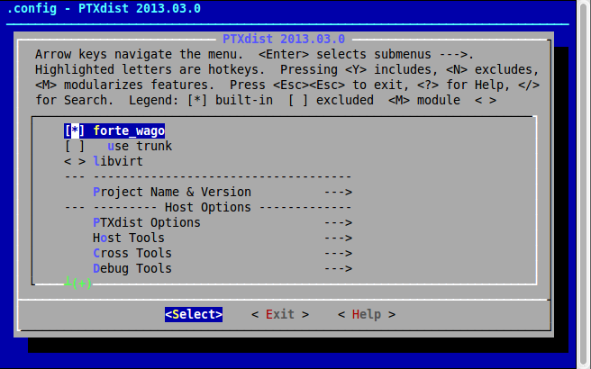
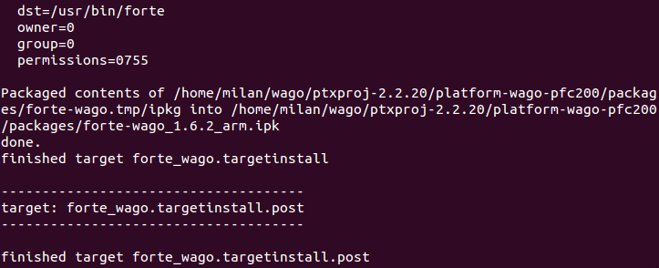
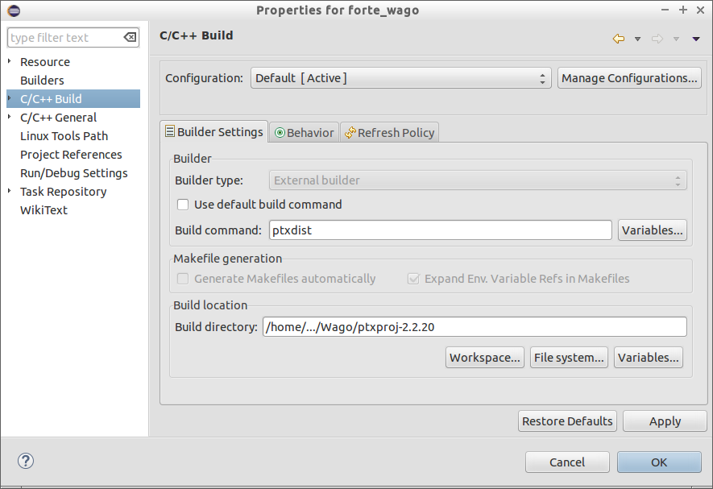
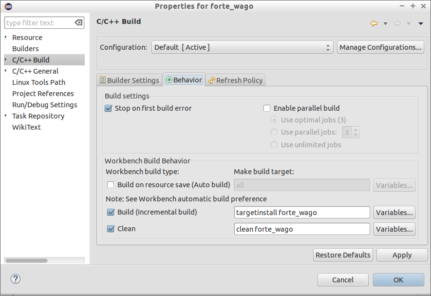
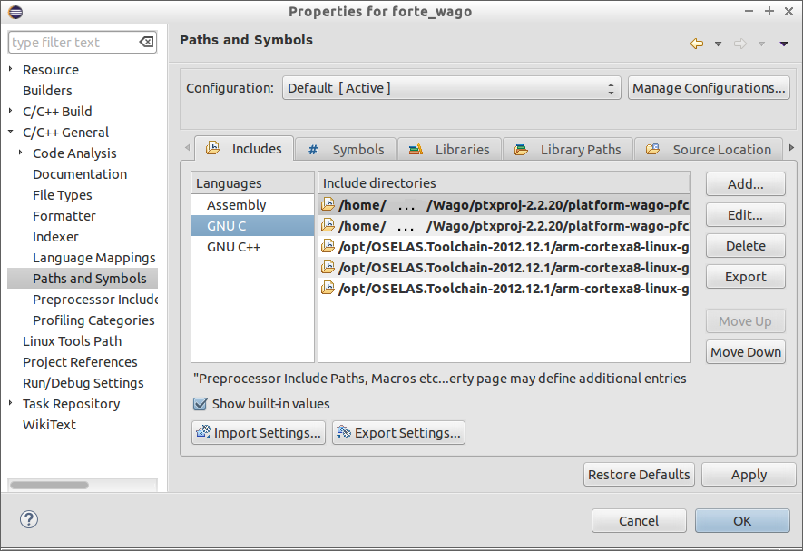
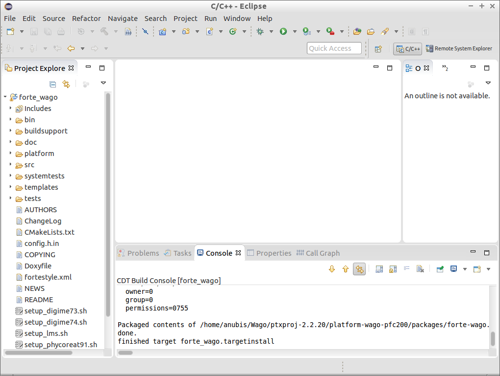
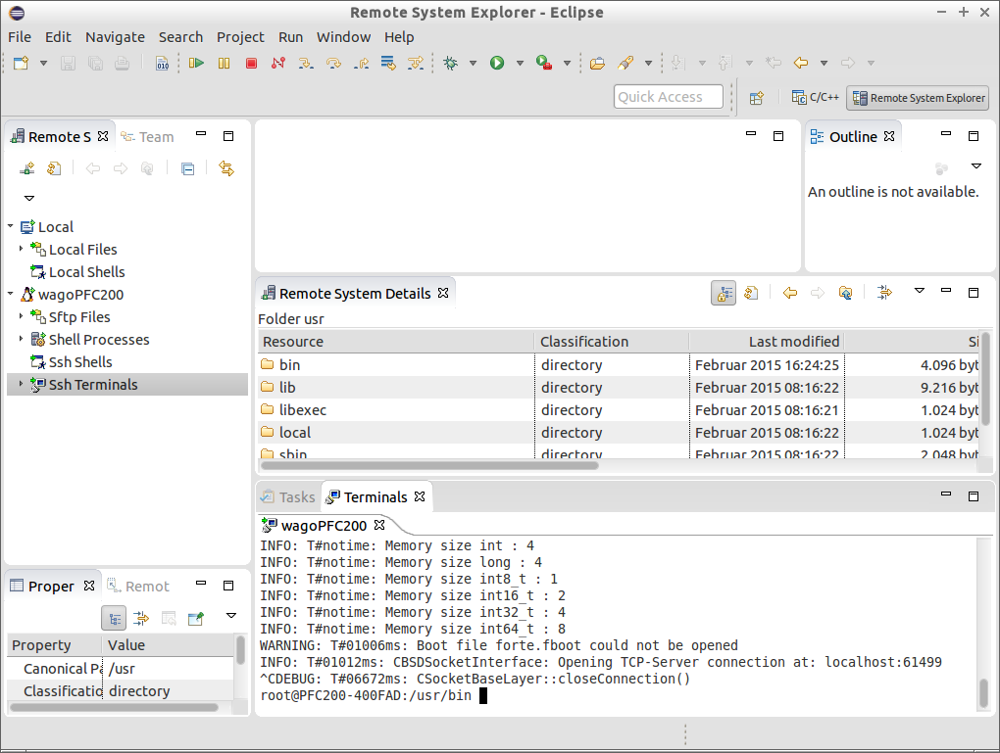
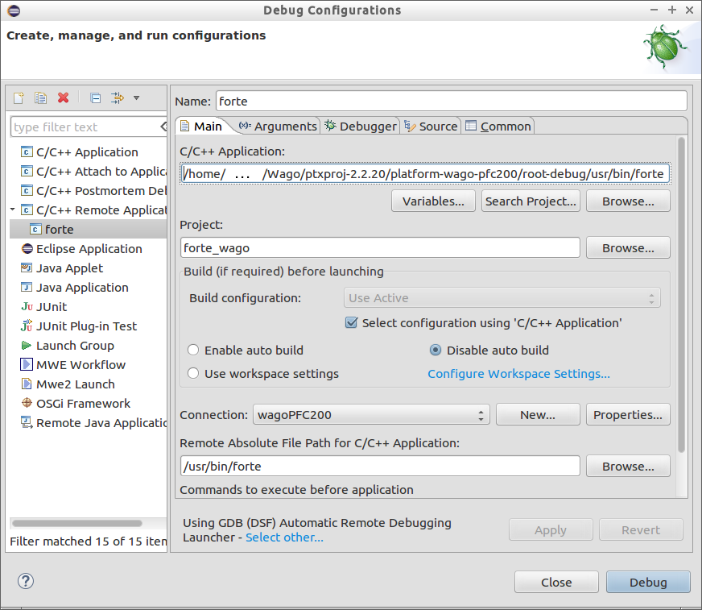
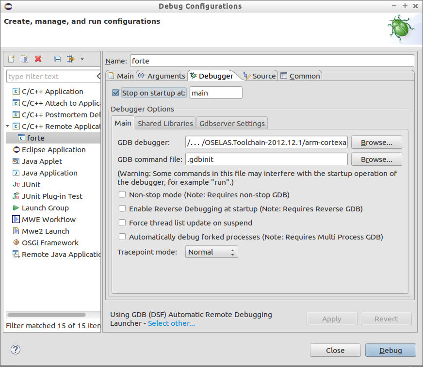

> cd wago/ptxproj-2.2.20 > ptxdist menuconfig
Building 4diac FORTE for Wago
Introduction
Wago PFC 200 series is a PLC designed to work in small and medium enterprises for small-scale automation and runs on an ARM cortex A8, 600 Mhz controller with real-time Linux 3.6 (RT preemption patch). This tutorial helps setting up 4diac FORTE on the WAGO embedded platform. The essentials for following this tutorial are:
-
Ubuntu 14.04 LTS host system with minimum 25 GB Hard Disk space (e.g. as a https:// www.virtualbox.org/[VirtualBox] VM)
-
Within Ubuntu, download :
-
WAGO-PFC-BSP Board Support Package (BSP) for configuring and building customized applications on Wago PFCs.
-
Dependencies for Wago BSP
-
OSELAS cross tool chain 2012.12.1 for Crotex A8 boards
-
PTXDist-2013.03.0 a GPL-licensed build system for building target embedded Linux kernel and root system from sources.
-
-
Latest version of 4diac FORTE source which contains the processInterface for Wago at
forte/src/modules/wagokbus. TheprocessInterfacefacilitates using Wago analog and digital IOs with generic IX,QX and IW,QW blocks from 4diac IDE.
-
|
Important
|
This tutorial is based on WAGO-PFC-BSP-2014.10.3. The procedure given here is also applicable for the latest board support packages from Wago. The toolchain and the PTXDist version may also vary based on the BSP version. |
Wago BSP Installation on Ubuntu Host
DO NOT install the packages within the root folder! The installation may take over an hour, therefore, be patient till the whole process is complete.
-
Create a folder e.g.
~/Wago -
Unzip the board support Package for WAGO PFC downloaded before into the
~/Wagofolder. Follow the installation process as found in HOWTo_Install_WAGO_PFC_BSP-version till the step Compile all packages of PFC200 Firmware.
Building 4diac FORTE
4diac FORTE is normally deployed in cross platforms using CMake.
Here, for the wago device, all the build process is controlled by ptxdist.
For the 4diac FORTE build process it is important to know about a few directories in the wago development environment.
All ptxdist packages are managed by so-called rule files.
These files are located in the wago/ptxproj-2.2.20/rules directory.
When you create a new package, rule files packagename.make and packagename.in are created in the rules directory.
There are two kinds of source directories, wago/src for system level packages and wago/local_src for new custom packages.
The build directory for the target system (i.e., wago) is located in a directory called platformwago-wago-pfc200/build-target.
-
Create a forte_wago project in PTXDist: From
FORTE/buildsupport/wago_pfc200/, copy the rule filesforte_wago.inandforte_wago.maketowago/ptxproj-2.2.20/rules(creates a new package). Within the copied rule file../ptxproj-2.2.20/forte_wago.makeedit the lineFORTE_WAGO_URL: file:///<path to 4diac FORTE main directory>to the absolute path of your 4diac FORTE main directory. To(de)activate specific modules (library parts) of 4diac FORTE edit…/ptxproj-2.2.20/wago.makelineFORTE_WAGO_CONF_OPT := … -
Save the package to PTXDist: To follow the standard build process of PTXDist the package has to be saved to the PTXDist build environment. Select the
forte_wagowith space key (This will be displayed as[*]) and press exit to quit. When asked whether you want to save the package, press .ImportantPTXDist is a command line utility which works only from the defined project environment, for example IMPORTANT: ~wago/ptxproj-2.2.20IMPORTANT: directory. The ptxdistcommands will work only in this directory.
-
Build the project: Go to your
ptxproj-2.2.20folder and perform the build instruction as follows to build 4diac FORTE for the target device Wago PFC.> cd wago/ptxproj-2.2.20 > ptxdist targetinstall forte_wago

The binary can be found in the directory
…/ptxproj-2.2.20/platform-wago-pfc200/buid-target/forte_wago-1.6.2-build/src. The binary can be either copied to the target device/usr/bindirectory or you can build your own custom linux image by performing<ptxdist go>;command in yourptxproj-2.2.20directory and boot with your own custom firmware. -
Rebuilding the Project: For rebuilding the project, the project has to be cleaned and perform the
targetinstallagain.> cd wago/ptxproj-2.2.20 > ptxdist clean forte_wago
This clean instruction deletes the
forte_wagobuild time stamps in the wago development environment. Now performing atargetinstallwill rebuild the project> ptxdist targetinstall forte_wago
If you made any changes in your 4diac FORTE root folder this changes will be reflected here and you will see the same window as you saw before.
Building and Debugging 4diac FORTE remotely on Wago PFC with Eclipse
Building 4diac FORTE with Eclipse
4diac FORTE can be debugged remotely from your Ubuntu host machine using Eclipse CDT. For more details, please refer to Wago on how to Utilize EclipseCDT. Using the same procedure, 4diac FORTE can be debugged remotely. The recommended folder structure for building 4diac FORTE in Eclipse is:
-
eclipseCDT
-
workspace
-
forte (contains 4diac FORTE source)
-
forte-wago (contains project to access the Wago PFC)
-
-
Within the forte-wago folder, create a new C Project by , type a project name, e.g., forte-wago, deactivate default location and set the location to your 4diac FORTE source e.g., forte.
Choose and and press .
Set the properties for the new projects.
Within the category set the Build command to ptxdist and the Build directory to your ptxdist installation
location.

Set within the Behavior tab to targetinstall forte_wago and Clean
to clean forte_wago.

Add the required include directories within the category. The required include directories are:
.../ptxproj-2.2.20/platform-wago-pfc200/sysroot-target/include .../ptxproj-2.2.20/platform-wago-pfc200/sysroot-target/usr/include .../OSELAS.Toolchain-2012.12.1/arm-cortexa8-linux-gnueabihf/gcc-4.7.3-glibc-2.16.0-binutils-2.22-kernel-3.6-sanitized/include .../OSELAS.Toolchain-2012.12.1/arm-cortexa8-linux-gnueabihf/gcc-4.7.3-glibc-2.16.0-binutils-2.22-kernel-3.6-sanitized/sysroot-arm-cortexa8-linux-gnueabihf/usr/include .../OSELAS.Toolchain-2012.12.1/arm-cortexa8-linux-gnueabihf/gcc-4.7.3-glibc-2.16.0-binutils-2.22-kernel-3.6-sanitized/ lib/gcc/arm-cortexa8-linux-gnueabihf/4.7.3/include

Within the C/C++ perspective right-click on your project and choose Build Project or . After building your project you should get a Console output as it is shown below.

Within the Remote System Explorer perspective, create a New Connection by clicking on . Choose Linux and press . Enter the IP of our Wago PFC as Host name and type any Connection Name, e.g. wagoPFC200 and press Finish. In the Remote System view, you can log to your Wago PFC by right-clicking on and entering root as user and wago as password. A Terminal view should open as well as a Remote System Details view.

Copy the 4diac FORTE executable to /usr/bin on the Wago PFC.
The executable can be copied to the Wago PFC by pasting it into the /usr/bin folder in the Remote System Details view.
Stop the running CoDeSys instance (kill plclinux_rt) if you want to use digital inputs/outputs of the Wago PFC and start 4diac FORTE with:
> cd /usr/bin > ./forte
Debugging 4diac FORTE with Eclipse
To debug 4diac FORTE on a Wago PFC, click on the small triangle next to and choose Debug Configurations.
Then, select C/C Remote Application# and set any name (e.g., `forte`).
Within the [.tab4diac]#main# tab, set the path to the 4diac FORTE executable under [.specicificText]#C/C Application, set the Project to your chosen project name forte_wago, check Disable auto build, set Connection to your chosen Connection name e.g. wagoPFC200 and set the Remote Absolute File Path for C/C++ Application to your 4diac FORTE executable on the Wago /usr/bin/forte.

Within the Debugger tab set the GDB debugger to /…/OSELAS.Toolchain-2012.12.1/arm-cortexa8-linux-gnueabihf/gcc-4.7.3-glibc-2.16.0-binutils-2.22-kernel-3.6-sanitized/bin/arm-cortexa8-linux-gnueabihf-gdb.

Debug 4diac FORTE with Eclipse as usual.
Where to go from here?
Now that you installed the required tools, it’s time to start using them. Take a look at the following page:
If you want to build a 4diac FORTE, here is a quick link back:
If you want to go back to the Start Here page, we leave you here a fast access
Or Go to top